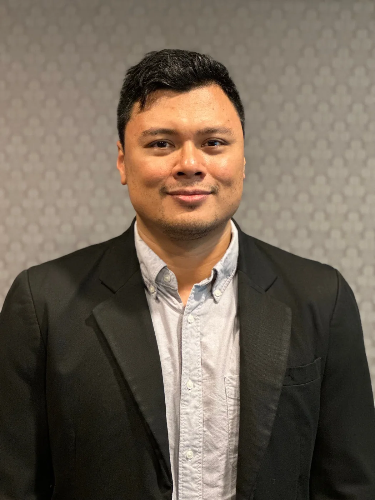
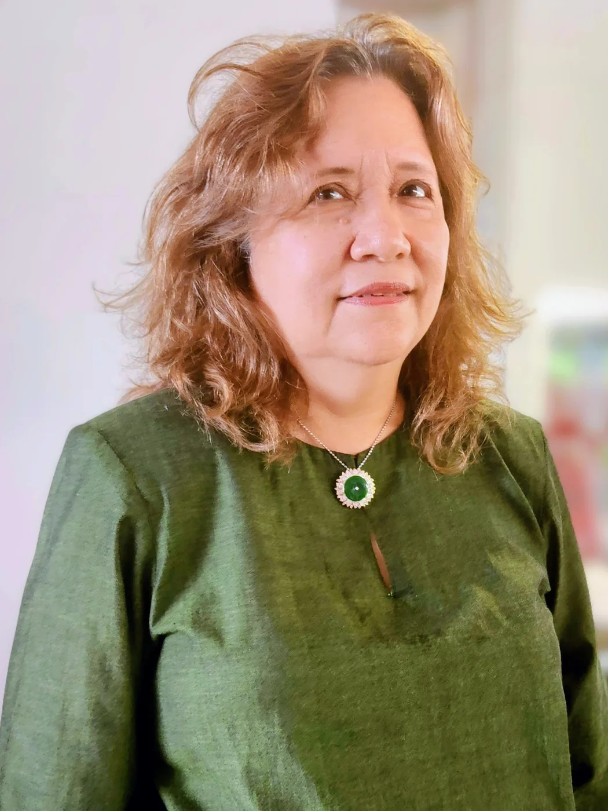
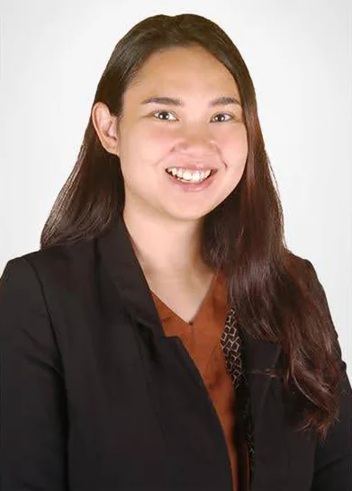
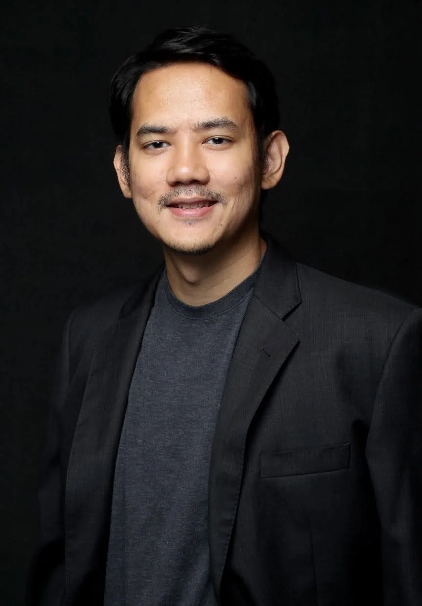
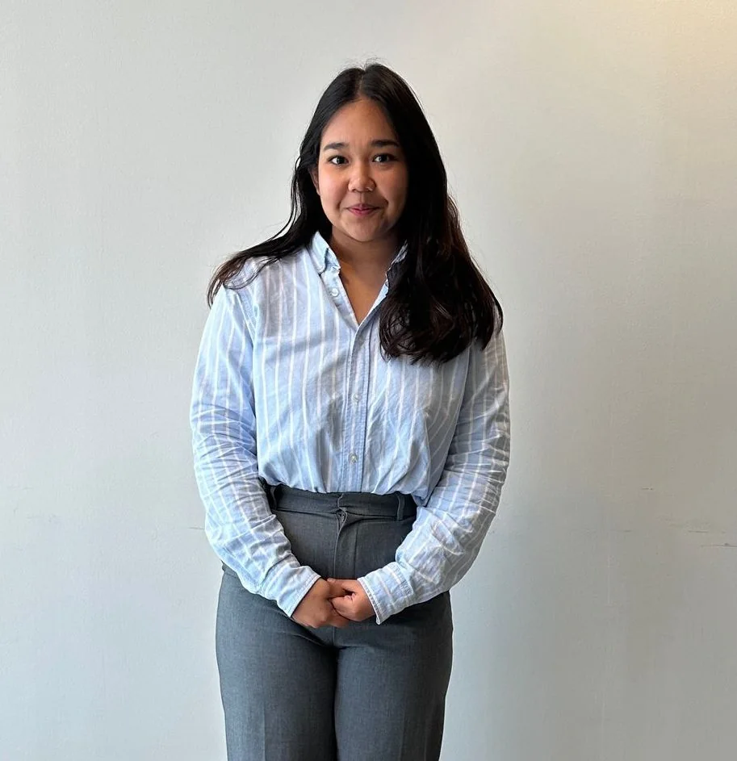
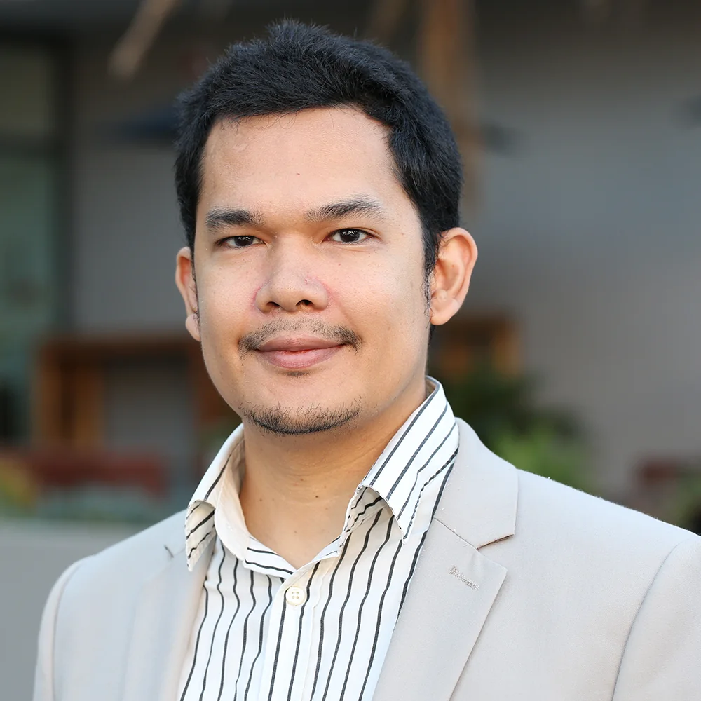
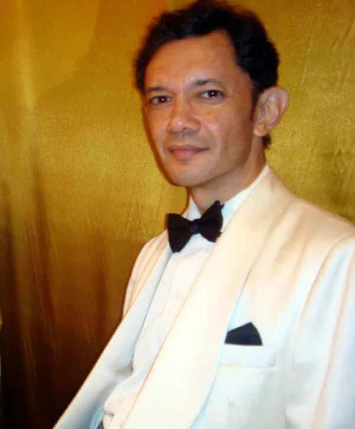
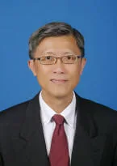
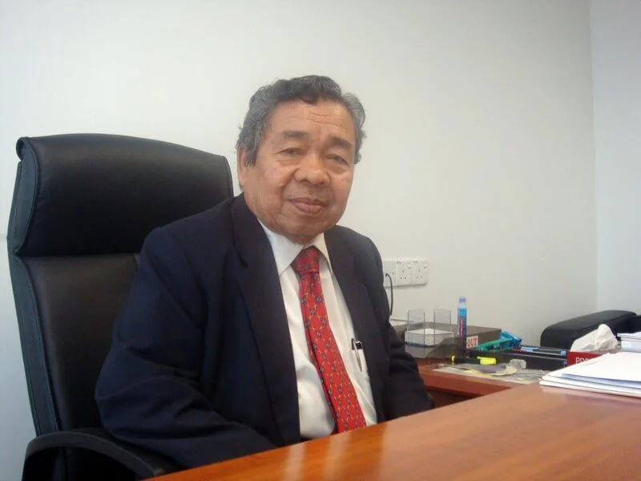
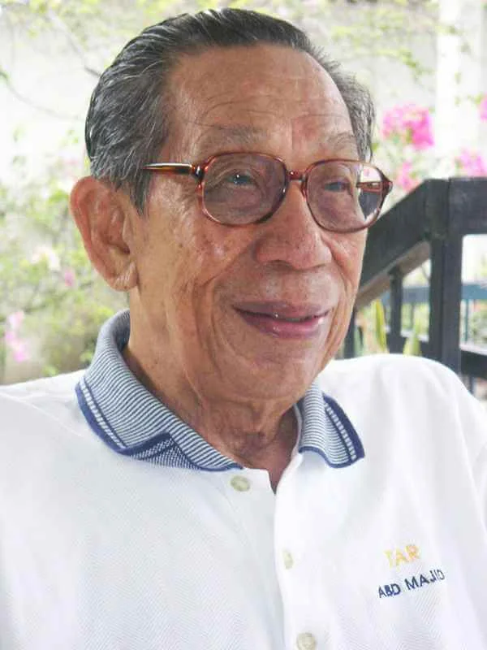

The people who guide Yayasan Tun Abdul Hamid today, together with the directors and chairmen whose service forms part of its institutional history.
06 / GOVERNANCE
CURRENT LEADERSHIP
Chairman & Board of Directors.
YTAH's current Board combines legal, public-health, investment, corporate and non-profit experience.
CHAIRMAN
Puan Ellina binti Abdul Majid
Puan Ellina binti Abdul Majid was appointed as Chairman of Yayasan Tun Abdul Hamid on 29 August 2022. Prior to that, she was a Director of the Yayasan since 26 March 2010.
Ellina was educated in Malaysia and the UK, and holds an honours degree in Law & Anthropology from the University of London, UK. She also has a Diploma in Speech & Drama from the London Academy of Music & Dramatic Art (LAMDA), UK.
Ellina is especially interested in advocating and encouraging the dynamic perspective of the youth: “In this day and age, they are the fresh, new energy required to make our world a better place.” With that in mind, she has endeavoured to compose a Board of Directors of young, qualified and experienced individuals with a common desire to do charity.
DIRECTOR
Dr. Rethish Raghu
Dr Rethish Raghu Nadhanan was appointed as a Director of the Yayasan in September 2019.
Rethish has over ten years of professional experience with a proven knowledge of both scientific research and Public Health, and an in-depth knowledge and experience of the workings of various non-profits and academic research settings.
With a PhD from The University of Adelaide, Australia, his areas of expertise and experience include Public Health, corporate social responsibility (CSR), Government and corporate relations, national healthcare policies, grants & funds administration and advocacy.
DIRECTOR
Puan Aza Izati binti Abdul Aziz
Puan Aza Izati binti Abd Aziz has been a member of the Yayasan since 2012 and was appointed as a Director of the Yayasan in January 2023.
With more than 15 years' work experience, she currently serves as an Analyst at one of Malaysia's pension fund institutions, where her primary responsibilities include managing investment policies and guidelines and ensuring they remain robust and resilient amidst changing market conditions and in line with relevant laws & regulations. Prior to this, she served as a capital market regulator at Securities Commission Malaysia.
Aza obtained an LLB (Hons) from the University of Wales, Aberystwyth and holds a Master of Business Administration from the University of Nottingham. Outside of work, Aza enjoys reading, live concerts and spending time with family and friends.

DIRECTOR
Encik Khairil Ahmad bin Kamil Ahmad
Encik Khairil Ahmad bin Kamil Ahmad was appointed as a Director of the Yayasan in January 2023.
Khairil is legally trained with a wealth of experience in the corporate sector. He began his career with the Securities Commission, and from then on, he has continued to develop a variety of skill sets in the advancement of his career with various corporate entities including a government-linked development authority, an online delivery platform and currently, a multinational technology company.
Khairil holds a Bachelor's Degree from Bond University in Australia, a Master of Law from the University of New South Wales, and an Executive Master's in Business Administration from Henley Business School. He holds certifications as a Certified Fraud Examiner, as well as a Certificate of Legal Practice from the Legal Qualifying Board Malaysia.

DIRECTOR
Puan Nor Jasmin binti Tan Sri Mohd Azmi
Puan Nor Jasmin binti Tan Sri Mohd Azmi was appointed as a Director of the Yayasan in December 2024.
Puan Nor Jasmin received her education in Malaysia and the UK and holds qualifications in the Montessori method of education.
She is active in a couple of non-profit organisations and derives a quiet satisfaction from performing spontaneous acts of charity to alleviate the burden of the less fortunate.
MEMBERS
Voting members.
Members contribute professional experience and an ongoing connection to the work and objects of the foundation.

MEMBER
Puan Serena Isabelle binti Azizuddin
Puan Serena Isabelle binti Azizuddin has been an active volunteer and friend of the Yayasan since 2009.
Puan Serena Isabelle binti Azizuddin was elected as a voting Member of Yayasan Tun Abdul Hamid on 15 December 2014.
Puan Serena is an Honours graduate in Law from the University of Kent, UK and a Master's graduate in Law, specialising in Civil Litigation & Alternative Dispute Resolution, from City University, London, UK. She is also a Barrister-At-Law of The Honourable Society of Lincoln's Inn, London, UK and an Advocate & Solicitor of the High Court of Malaya.
Puan Serena is currently a Partner at one of the leading law firms in the Asia Pacific region.

MEMBER
Encik Feisal bin Azizuddin
Encik Feisal bin Azizuddin is a filmmaker based in Malaysia. He has produced feature films available on Netflix, Tubi, Amazon Prime Video, Viu and Astro.
His short films mostly explore social issues in Malaysia, such as baby-selling, custodial deaths and conversion therapy. His short film Can You Love Me Most? was awarded Best Short Film at the 32nd Festival Filem Malaysia.

MEMBER
Cik Leia Inanna binti Azizuddin
Leia read Law at the University of Exeter, and holds a Master of Laws from City, University of London. She spends her free time volunteering at refugee schools and cafe hopping.
ADVISOR
Advisory support.

ADVISOR
Encik Iskander bin Azizuddin
Encik Iskander bin Azizuddin has over 15 years of experience in project management, business administration, talent acquisition, and stakeholder engagement.
Iskander serves as an Advisor at Yayasan Tun Abdul Hamid. Iskander has also held roles in investment services and technology infrastructure in an investment bank.
LEADERSHIP HISTORY
Those who carried the foundation forward.
YTAH's governance record includes the founder and first Chairman, a second-generation Chairman, retired and past Directors.
FOUNDER & FIRST CHAIRMAN · 1929—2009
Tun Dato' Seri Hj. Abdul Hamid bin Hj. Omar
Allahyarham Tun Dato' Seri Hj. Abdul Hamid bin Hj. Omar was educated at the Sultan Abdul Hamid College in Kedah before furthering his studies in England. He was a Barrister-at-Law of The Honourable Society of Lincoln's Inn, London, having been called to the English Bar in 1955. Tun was appointed a judge of the High Court of Malaya in 1968 and retired as Chief Justice of the Federal Court of Malaysia in 1994.
Tun was also actively involved in the Malaysian Red Crescent Society and served as their President for several years. Tun was the Chairman of the Yayasan for 13 years since its inception in 1996 until his demise on 1 September 2009 (11 Ramadan 1430).

CHAIRMAN · RETIRED
Encik Azizuddin bin Tun Abdul Hamid
Encik Azizuddin bin Tun Abdul Hamid was appointed a Director of Yayasan Tun Abdul Hamid on 18 November 2006. He was elected Vice-Chairman in 2008, following the illness of the then Chairman, Tun Dato' Seri Hj. Abdul Hamid bin Hj. Omar.
Encik Azizuddin was elected Chairman of Yayasan Tun Abdul Hamid after the demise of Tun Dato' Seri Hj. Abdul Hamid in 2009. Encik Azizuddin was educated at St. John's Institution, Kuala Lumpur, the Royal Military College, Sungei Besi and Cambridgeshire College of Arts & Technology (now Anglia Ruskin University), Cambridge, England. He obtained his B.A. (Honours) Economics & Accounting from the University of Newcastle-upon-Tyne, England and Postgraduate Diploma-in-Law from the City University, London.
Encik Azizuddin is a Barrister-at-Law of The Honourable Society of Lincoln's Inn, London, UK. He is also a member of the Malaysian Bar. Encik Azizuddin retired as the Chairman of Yayasan Tun Abdul Hamid on 29 August 2022.

DIRECTOR · RETIRED
Mr. Kwang Jia Shing
Mr. Kwang Jia Shing was appointed a Director of Yayasan Tun Abdul Hamid on 5 August 2009. He obtained his LL.B. (Hons) from the University of Wales Institute of Science & Technology, UK and is also a Barrister-at-Law of The Honourable Society of Lincoln's Inn, London, UK. He is also a member of the Malaysian Bar.
Mr. Kwang retired as a Director of Yayasan Tun Abdul Hamid on 29 August 2022.

PAST DIRECTOR · 1935—2015
Tan Sri Dato' Seri Hj. Lamin bin Hj. Mohd Yunus
Allahyarham Tan Sri Dato' Seri Hj. Lamin bin Hj. Mohd. Yunus was appointed a Director of Yayasan Tun Abdul Hamid on 16 December 2006. Tan Sri received his education from High School Bukit Mertajam & Anglo-Chinese Boys' School, Penang. He then went on to obtain an LLB (Hons) from the University of Singapore, followed by a post graduate Diploma in Socio-Legal Studies from the University College of Wales, UK. Tan Sri retired as the first President of the Court of Appeal in 2001.
Tan Sri also had the rare honour of being elected by the 59th session of the United Nations General Assembly as an ad litem Judge of the International Criminal Tribunal for the former Republic of Yugoslavia, based in The Hague between 2005–2009.

PAST DIRECTOR · 1921—2013
Tan Sri Dato' Seri Dr. Hj. Abdul Majid bin Ismail
Allahyarham Tan Sri Dato' Seri Dr. Hj. Abdul Majid bin Ismail was appointed a Director of Yayasan Tun Abdul Hamid on 14 November 2008. Tan Sri was educated at Maxwell Boys' School and Victoria Institution, Kuala Lumpur. An orthopaedic surgeon by profession, Tan Sri obtained his Fellowship in Surgery from The Royal College of Surgeons, Edinburgh, Scotland and his Master's in Orthopaedics from The University of Liverpool, England.
Tan Sri was the first Malayan Chief Orthopaedic Surgeon at the Kuala Lumpur General Hospital (a position previously held exclusively by Colonials) and eventually retired as the Director-General of Health for Malaysia in 1976.
Tan Sri was also the Chairman of Yayasan Jantung Malaysia (Malaysian Heart Foundation) for several years and a Board member of Yayasan Sultan Salahuddin Abdul Aziz.
CONTINUITY · 2006
A written intention for continuity.
Of historical interest are extracts of a letter composed and signed by Tun Dato' Seri Hj. Abdul Hamid in 2006 stating his intention that his eldest son, Azizuddin, like himself a Barrister-at-Law, be appointed to the Board of Yayasan Tun Abdul Hamid to ensure continuity of the running and the objects of the Yayasan.